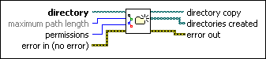
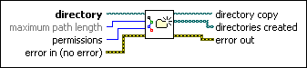

Create Directory Recursive VI
Owning Palette: Advanced File VIs and Functions
Requires: Base Development System
Creates a directory and any parent directories it requires to exist.

 Add to the block diagram Add to the block diagram |
 Find on the palette Find on the palette |
Owning Palette: Advanced File VIs and Functions
Requires: Base Development System
Creates a directory and any parent directories it requires to exist.

| Add to the block diagram |
Find on the palette |
 |
directory specifies the path to the directory to create. If you specify a directory that already exists, this VI does nothing. |
 |
maximum path length specifies the maximum number of characters allowed in the path. The default is 252. |
 |
permissions specifies the permissions setting for the file or directory. The default is 111101101, which is rwx r-x r-x in common file notation, and means the current user has permission to read, write, and execute files in this directory; the current user's group members have permission only to read and execute; all system users have permission only to read and execute. Refer to Setting Permissions for more information about how to define the permissions you want to set. |
 |
error in describes error conditions that occur before this node runs. This input provides standard error in functionality. |
 |
directory copy returns directory unchanged. |
 |
directories created returns the path to the directory and paths to any parent directories this VI creates. |
 |
error out contains error information. This output provides standard error out functionality. |